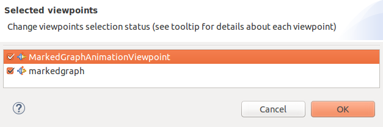

Right click on wikipedia.aird and select Viewpoints Selection. If Viewpoints Selection is not in the menu, double-click on the file wikipedia.aird.
Select Viewpoint Selection. 
Select MarkedGraphAnimationViewpoint. 
You can now open the wikipedia graphical representation (wikipedia.air / Representation per category / markedgraph / MarkedGraph diagram / wikipedia MarkedGraph diagram). On the visualization, all places should be with a yellow background.